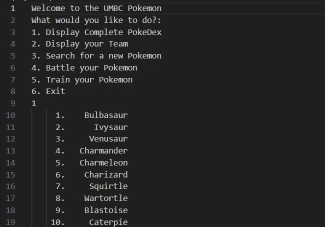

December, 2024
During my time at university, I have worked on several projects that have sharpened my coding
skills and deepened my understanding of complex concepts, such as object-oriented programming.
I've completed three major projects in Python and five in C++. While I am unable to share the full
code due to school policies, I will provide detailed descriptions of each project, along with images of
their outputs to give you a visual representation of my work.

This project implements a simplified version of the Mancala game, where two players take turns moving stones across a grid-based board. It handles the distribution of stones between cups and mancalas, checking if a player lands in their mancala for an extra turn. The board updates after every move, and the game keeps track of the number of stones in each player's mancala to determine the winner once one player’s row of cups is empty. The code includes functions for player input validation and updating the game state dynamically to ensure a smooth experience.

Tactego is a strategy game where players control pieces on a grid. The game initializes by reading piece types and quantities from a file, randomly placing them for two teams. Players take turns moving their pieces across the grid, and the game includes logic for resolving battles based on piece types. The program ensures players only make valid moves, providing feedback if an action is invalid. The game continues in a loop until one team captures all flags, determining the winner. The design of the project emphasizes handling user input, managing dynamic board updates, and validating game mechanics.
This project simulates a phone network where users can manage phone calls, area codes, and connections between switchboards. It features functions for adding switchboards and phones, starting and ending calls, and ensuring that the number of calls between area codes doesn’t exceed a set limit. The network can be saved to a file and loaded back, making it possible to maintain persistent configurations. The program uses recursive algorithms to ensure calls can be connected properly between area codes, making the simulation both flexible and efficient. The project involves managing complex relationships between objects and validating network connections.
This project is a simplified version of the Wheel of Fortune game, where players guess letters to reveal a word. It loads puzzle data from a file and displays the puzzle with guessed letters, dynamically updating after each guess. The game includes an ASCII table to track the frequency of guessed letters and handles the logic to check if the puzzle is solved. The game continues until the player either guesses all the letters correctly or runs out of attempts. This project focuses on text-based interactions, input validation, and updating the game state based on user input.

This project creates a Pokémon-inspired simulation, where players can view, catch, and train Pokémon. The game loads Pokémon data from a file and stores it in a Pokédex. Players can catch Pokémon based on rarity, manage their team, and engage in battles against randomly generated enemies. The game also includes training mechanics to improve a Pokémon’s stats. The menu system allows players to navigate through their Pokédex, manage their team, and battle, providing an interactive experience. The project demonstrates object-oriented design, random number generation, and game mechanics involving Pokémon management and combat.
This project simulates managing airports and routes. The Navigator class manages a collection of airports and routes, where routes are represented as linked lists. The program loads airport data from a file, displaying detailed information about each airport. Users can create new routes by selecting airports and calculate the distance between airports. The system also allows for route modifications such as reversing the route or removing airports from it. The project focuses on dynamic memory management, linked lists, and creating an interactive system for managing and exploring routes between airports.
This project simulates a space exploration game, where players manage a spaceship and interact with different types of planets. The game uses polymorphism to handle interactions with various items and planet types, such as enemy planets, gas planets, and mining planets. Players can equip their ship with items like armor and weapons, travel between planets, and engage in battles. The game’s main objective is to reach Utopia, with various obstacles along the way. The project highlights polymorphic design, object-oriented programming, and resource management, offering a flexible gameplay experience.

This project implements a movie catalog management system, where users can load movies from a file, sort them by year, genre, or director, and create playlists. The system uses a templated queue for managing and displaying movie lists. Users can filter the catalog, add movies to a playlist, and sort them based on specific criteria. The project also includes advanced search features to find movies quickly. The focus is on efficient data handling, sorting algorithms, and using templates to create flexible, reusable code for managing large collections of movies.